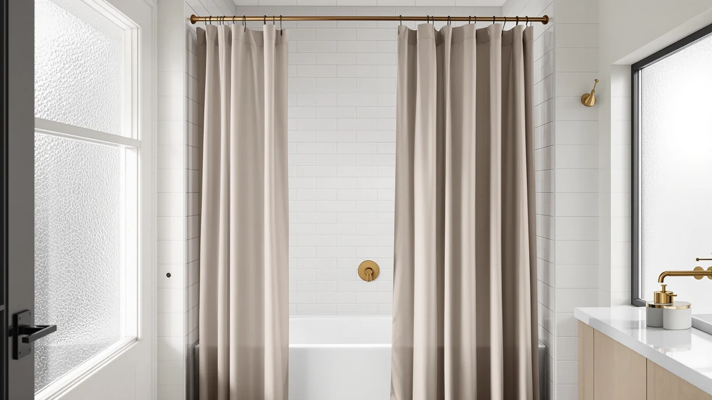

Best How to Install Shower Curtain (2026) | Best Shower Curtains


Things to Know Before You Buy
- Plan for about 30 minutes. A first install with a tension rod takes 20 to 30 minutes, and a drilled rod adds 10 to 15 minutes for anchors.
- Set the rod at 75 to 77 inches. That height keeps a standard 72-inch curtain about an inch above the tub rim so water drips inward.
- Use a liner behind a fabric curtain. The liner does the waterproofing while the outer curtain handles the look, and both hang on the same rings.
- Buy 12 rings for a standard curtain. Most 72-inch curtains and liners share a 12-grommet spacing, so one pack covers both layers.
- Renters can skip the drill. A tension rod grips between two facing walls up to roughly 5 feet apart and leaves no holes.
Knowing how to install shower curtain hardware the right way saves you from the two problems that plague most bathrooms: a rod that slips down mid-shower and a curtain that dumps water onto the floor. You do not need a contractor or a full toolbox for this. With a tape measure, a level, and about half an hour, you can hang a rod, thread the rings, and set the liner so the whole thing stays put and stays dry.
This guide walks you through five steps in the order you should tackle them. You will measure and mark the rod height first, install the rod, hang the liner and rings, add the decorative curtain, then run a quick water test to confirm the seal. Along the way we flag the height that keeps water in the tub, why the liner goes behind the outer curtain, and the small mistakes that leave puddles on your bathroom floor.
What You'll Need
- Supplies: A shower curtain, a waterproof liner, and a set of 12 curtain rings or hooks
- Tools: A tape measure, a level, and a pencil for marking
Step 1: Measure and mark the rod height
Before you install shower curtain hardware, grab your tape measure and check the height at both ends of the tub. Measure up from the floor to 75 inches on one wall and mark a light pencil dot, then repeat on the opposite wall. That height gives a standard 72-inch curtain and liner room to hang about an inch above the tub rim, which is the sweet spot where water drips back into the tub instead of onto your floor.
Hold your level across the two marks, or measure each one from the floor twice, since bathroom floors and ceilings are rarely square. If one wall reads 75 inches and the other reads 76, trust the tape from the floor rather than the ceiling. A curtain that hangs a half-inch off looks crooked from across the room and leaves a gap at the low corner.
For a walk-in shower or a taller ceiling, you can raise the rod to 77 or 78 inches for a longer, more dramatic drape, as long as your curtain length still clears the base. Write down your final number before you move on, because you will set the rod to that exact mark in the next step.
Step 2: Install the shower curtain rod
You will install the shower curtain rod one of two ways, and the type you own decides the method. For a tension rod, twist the two halves apart until the rod is slightly wider than the gap, seat one rubber end against your mark, then extend the other end and twist to lock it under pressure. Push up on the middle to confirm it grips. A tension rod that holds firm should not shift when you tug it downward.
For a fixed rod, hold each bracket at your pencil mark and trace the screw holes. Drill pilot holes, tap in a wall anchor if you are not hitting a stud, then screw the brackets tight and snap or slide the rod into place. Fixed rods carry more weight and never creep down the wall, so they suit heavy fabric curtains and busy family bathrooms.
Whichever rod you use, load-test it before you hang anything. Hang your full weight of hand on the center for a second, and watch for the tension rod sliding or the brackets flexing. Fix a loose rod now, because a rod that fails after the curtain is up soaks the liner and the floor.
Step 3: Thread the rings and hang the liner
Open your pack of 12 rings and slide them all onto the rod before you lift it into the brackets, or thread them on in place if you used a fixed rod. Space them evenly so the curtain gathers in soft folds rather than bunching at one end. Snap-style rings clip on fastest, while metal roller rings glide the smoothest when you open and close the curtain each day.
Hang the waterproof liner first, hooking each grommet onto the inner side of a ring so the liner sits closest to the water. Line up the liner grommets with the rings one by one, and let the bottom hem fall inside the tub. A liner that hangs outside the tub wall funnels water straight onto the floor, which is the single most common install mistake.
Check that the liner reaches the tub floor without pooling in a heap. Most liners measure 72 inches long and land right at the base of a standard tub. If yours puddles at the bottom, your rod sits too low, so raise it an inch rather than leaving fabric to soak and grow mildew.
Step 4: Hang the decorative shower curtain
With the liner in place, hang the decorative shower curtain on the outer side of the same rings so its pattern faces the room. Work from one end to the other, matching each grommet to a ring so both layers share the same hooks. This keeps the two curtains moving together and gives you one clean line across the top instead of two mismatched hems.
Line up the top edge of the outer curtain with the top of the liner so they drop at the same height. If your fabric curtain runs longer than the liner, that overhang is fine, since the outer layer stays dry and only frames the tub. Smooth the panel with your hand and shake out any packing creases while the fabric still hangs loose.
Step back and look at the fold pattern. Even, repeating folds mean your rings are spaced well, and a lopsided drape means one section carries too many rings. Slide a ring or two until the curtain hangs in a balanced wave, because a curtain you fix now stays neat every time you open it.
Step 5: Level the curtain and test the seal
Finish the job with a real water test before you call the install done. Turn the shower on for a minute and watch where the spray hits the liner. Tuck the liner inside the tub along its full length so the bottom hem sits against the inner wall, and the water that runs down the liner drains back into the tub.
Watch the two ends where the curtain meets the walls, since those corners leak most often. Pull the liner an inch past the tub edge on each side to close the gap, and shift the rings if one corner rides up. A curtain that overlaps the tub wall by an inch on both ends stops the sideways spray that soaks the floor near the faucet.
Run your level across the top of the rod one last time and nudge it if it drifted while you loaded the curtains. Wipe the liner dry and spread the curtain out to air after the test, because a curtain left bunched traps moisture and starts the mildew you just worked to avoid. Once the corners hold and the rod sits level, your shower curtain is installed and ready for daily use.
Common Mistakes to Avoid
The mistakes that ruin a shower curtain install are small and easy to fix once you know them. The biggest one is hanging the liner outside the tub. When you leave that bottom hem draped over the outer edge, every shower sends a sheet of water straight down the wall and onto your floor. Always tuck the liner inside the tub, and you close off the leak that frustrates most first-time installers.
Setting the rod too low ranks second. A rod under 74 inches leaves the curtain pooling on the tub floor, where trapped water breeds mildew within a week. Measure to 75 inches from the floor and give the fabric room to hang free.
Skipping the load test on a tension rod is what sends it crashing down at 6 a.m. Push up hard on the center before you trust it, since a rod that slips clean out of the wall takes the curtain down with it.
Two smaller errors round out the list. Buying a liner shorter than the curtain leaves a gap at the bottom, so match both to 72 inches. Spacing the rings unevenly gives you a lopsided drape, so distribute all 12 across the rod before you judge the folds. Correct these five, and your curtain hangs straight and stays dry.
Our Top Picks
If you still need the curtain, liner, or rod to complete the install, these three are the ones we reach for first. Each one hangs easily on standard rings and covers a different priority, whether you want a no-drill setup, the best price, or a premium look.

Editor’s Pick
Amazon Basics No Drill Easy
The fastest route to a finished install. This no-drill tension set goes up in minutes with no wall damage, which makes it our top pick for renters and anyone who wants to skip the toolbox.
$22.68
Check Price on Amazon
Best Value
GORILLA GRIP Waffle Shower Curtain
A waffle-weave curtain that punches above its price. The rustproof grommets thread onto standard rings without fuss and hang in even folds, so you get a clean look for well under $20.
$16.99
Check Price on Amazon
Premium Choice
Linen Shower Curtain Flax Tan
The upgrade that makes a bathroom feel finished. This flax-tan linen curtain drapes with a spa-like weight and pairs with a liner behind it, so you get the premium texture without giving up waterproofing.
$27.99
Check Price on AmazonFrequently Asked Questions
How high should I hang a shower curtain?
Hang the rod 75 to 77 inches from the floor for a standard tub. That height keeps a 72-inch curtain about an inch above the tub rim, so it clears the edge without pooling water at the bottom. For a walk-in shower or a taller ceiling, you can raise it to 77 or 78 inches as long as the curtain still reaches the base.
Do I need a separate liner to install a shower curtain?
Yes, unless your curtain is fully waterproof fabric. A liner handles the waterproofing and protects a decorative cloth curtain from mold and soap scum. You hang the liner on the inner side of the same rings, behind the outer curtain, and tuck its bottom hem inside the tub.
Can I install a shower curtain without drilling?
A spring-loaded tension rod installs with no drilling and grips between two facing walls up to about 5 feet apart. Renters and anyone avoiding wall damage can use one. A fixed rod screwed into studs holds more weight over time, so choose that route for heavy fabric curtains or a busy family bathroom.
How many rings do I need to install a shower curtain?
Most standard 72-inch curtains and liners use 12 grommets, so a single 12-pack of rings covers both layers. Slide all 12 onto the rod and space them evenly before you judge the folds, because uneven spacing gives you a lopsided drape.
Why does water leak onto the floor after I install a shower curtain?
Water on the floor almost always means the liner hangs outside the tub or the corners do not overlap the tub wall. Tuck the liner inside the tub along its full length, and pull each end an inch past the tub edge to close the side gaps where spray escapes near the faucet.
Verdict
Learning how to install shower curtain hardware comes down to five moves you now have in order: measure the rod to 75 inches, mount the rod and load-test it, hang the liner inside the tub on 12 rings, add the decorative curtain to the same hooks, then run a water test and level the top. Skip none of them, and the two failures that plague most bathrooms, a sliding rod and a wet floor, never show up. The whole job takes about 30 minutes and costs around $15 in parts. If you still need the pieces, the Amazon Basics No Drill Easy set is the fastest finish for renters, since it goes up with no wall damage and no tools. Pair it with a liner tucked inside the tub, keep the corners overlapping the tub wall by an inch, and your shower curtain hangs straight and stays dry from the first shower on.